Ventre Occipital
Origem: 2/3 laterais da linha nucal superior do osso occipital e processo mastóide.
Inserção: Gálea aponeurótica.
Inervação: Ramo auricular posterior do nervo facial.
Ação: Trabalhando com o ventre frontal traciona para trás o couro cabeludo,
elevando as sobrancelhas e enrugando a fronte.
Ventre Frontal
Origem: Não possui inserções ósseas. Suas fibras são contínuas com as do prócero, corrugador e orbicular do olho.
Inserção: Gálea aponeurótica.
Inervação: Ramos temporais.
Ação: Trabalhando com o ventre occipital traciona para trás o couro cabeludo, elevando as sobrancelhas e enrugando a fronte. Agindo isoladamente, eleva as
sobrancelhas de um ou de ambos os lados.
O Epicrânio é uma vasta lâmina musculotendinosa que reveste o vértice e as faces laterais do crânio, desde o osso occipital até a sobrancelha.
É formado pelo ventre occipital e pelo ventre frontal e estes são reunidos por uma extensa aponeurose intermediária: a gálea aponeurótica.
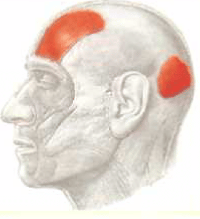
O Temporoparietal é uma vasta lâmina muito delgada.
Origem: Fáscia temporal.
Inserção: Borda lateral da gálea aponeurótica.
Inervação: Ramos temporais.
Ação: Estica o couro cabeludo e traciona para trás a pele das têmporas. Combina-se com o occipitofrontal para enrugar a fronte e ampliar os olhos (expressão de medo e horror).
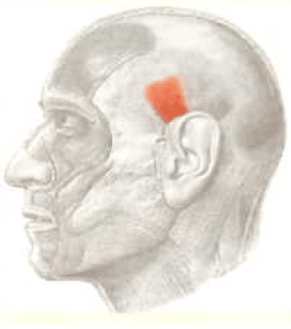
A Gálea Aponeurótica reveste a parte superior do crânio entre os ventres frontal e occipital do occipitofrontal.
Origem: Protuberância occipital externa e linha nucal suprema do osso occipital.
Inserção: Frontal. De cada lado recebe a inserção do temporoparietal.
Inervação: O ventre frontal e temporoparietal são supridos pelos ramos temporais, e o ventre occipital, pelo ramo auricular posterior do nervo facial.
Ação: Traciona para trás o couro cabeludo elevando a sobrancelha e enrugando a fronte, como uma expressão de surpresa.
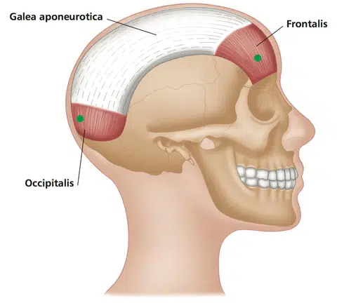
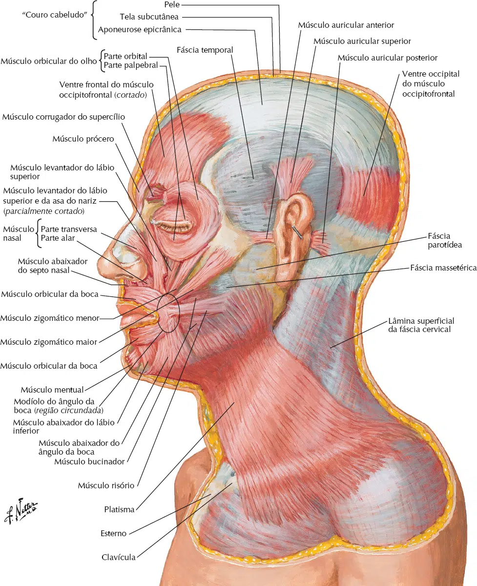
Este músculo contorna toda a circunferência da órbita. Divide-se em três porções: palpebral, orbital e lacrimal.
Origem: Parte nasal do osso frontal (porção orbital), processo frontal da maxila, crista lacrimal posterior (porção lacrimal) e da superfície anterior e bordas do
ligamento palpebral medial (porção palpebral).
Inserção: Circunda a órbita, como um esfíncter.
Inervação: Ramos temporal e zigomáticas do nervo facial.
Ação: Fechamento ativo das pálpebras.
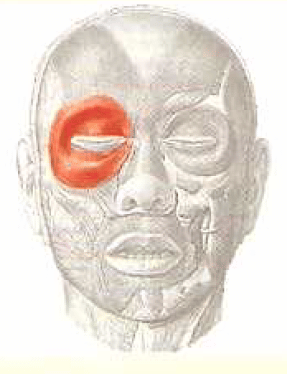
Origem: Extremidade medial do arco superciliar.
Inserção: Superfície profunda da pele.
Inervação: Ramos temporal e zigomáticas do nervo facial.
Ação: Traciona a sobrancelha para baixo e medialmente, produzindo rugas verticais na fronte. Músculos da expressão de sofrimento.
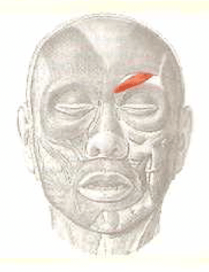
Origem: Fáscia que reveste a parte mais inferior do osso nasal e a parte superior da cartilagem nasal lateral.
Inserção: Pele da parte mais inferior da fronte entre as duas sobrancelhas.
Inervação: Ramos bucais do nervo facial.
Ação: Traciona para baixo o ângulo medial da sobrancelha e origina as rugas transversais sobre a raiz do nariz.
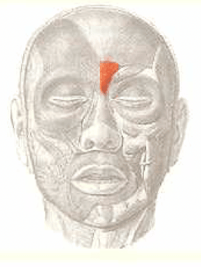
Origem:
Porção Transversal – Maxila, acima e lateralmente à fossa incisiva.
Porção Alar – Asa do nariz.
Inserção:
Porção Transversal – Dorso do nariz.
Porção Alar – Imediações do ápice do nariz.
Inervação: Ramos bucais do nervo facial.
Ação: Dilatação do nariz.
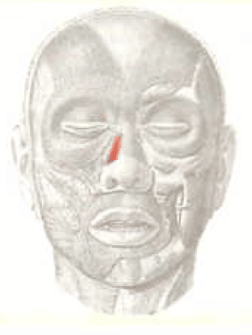
Origem: Fossa incisiva da maxila.
Inserção: Septo e na parte dorsal da asa do nariz.
Inervação: Ramos bucais do nervo facial.
Ação: Traciona para baixo as asas do nariz, estreitando as narinas.
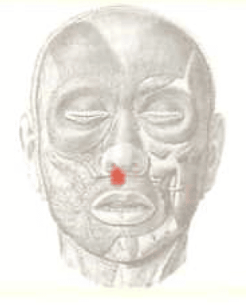
Origem: Porção anterior da fáscia na zona temporal.
Inserção: Saliência na frente da hélix.
Inervação: Ramos temporais.
Ação: Traciona o pavilhão da orelha para frente e para cima.
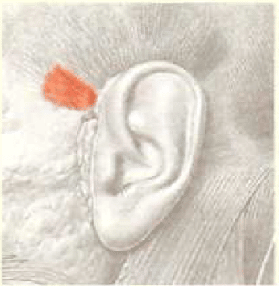
Origem: Fáscia da zona temporal.
Inserção: Tendão plano na parte superior da superfície craniana do pavilhão da orelha.
Inervação: Ramos temporais.
Ação: Traciona o pavilhão da orelha para cima.
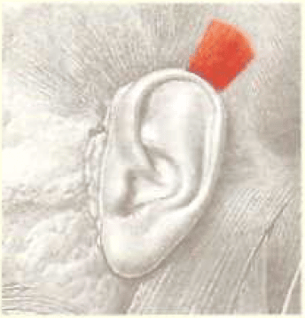
Origem: Processo mastóide.
Inserção: Parte mais inferior da superfície craniana da concha.
Inervação: Ramo auricular posterior do nervo facial.
Ação: Traciona o pavilhão da orelha para trás.
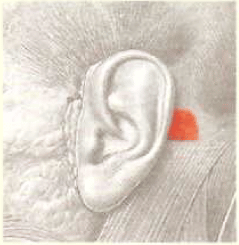
Origem: Margem inferior da órbita acima do forame infra-orbital, maxila e zigomático.
Inserção: Lábio superior e asa do nariz.
Inervação: Ramos bucais do nervo facial.
Ação: Levanta o lábio superior e leva-o um pouco para frente.
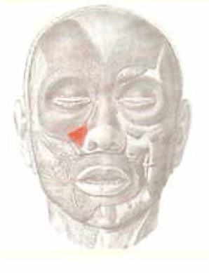
Origem: Processo frontal da maxila.
Inserção: Se divide em dois fascículos. Um se insere na cartilagem alar maior e na pele do nariz e o outro se prolonga no lábio superior.
Inervação: Ramos bucais do nervo facial.
Ação: Dilata a narina e levanta o lábio superior.
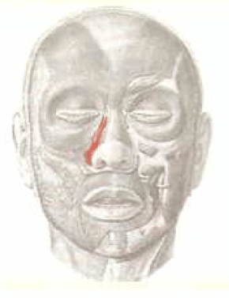
Origem: Fossa canina (maxila).
Inserção: Ângulo da boca.
Inervação: Ramos bucais do nervo facial.
Ação: Eleva o ângulo da boca e acentua o sulco nasolabial.
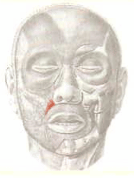
Origem: Superfície malar do osso zigomático.
Inserção: Lábio superior (entre o levantador do lábio superior e o zigomático maior).
Inervação: Ramos bucais do nervo facial.
Ação: Auxilia na elevação do lábio superior e acentua o sulco nasolabial.
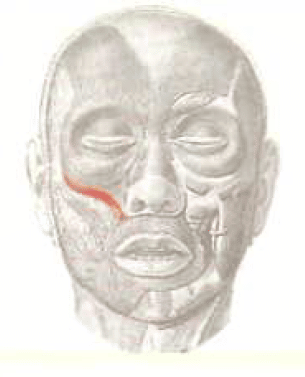
Origem: Superfície malar do osso zigomático.
Inserção: Ângulo da boca.
Inervação: Ramos bucais do nervo facial.
Ação: Traciona o ângulo da boca para trás e para cima (risada).
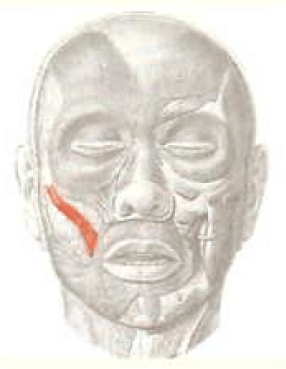
Origem: Fáscia do masseter.
Inserção: Pele no ângulo da boca.
Inervação: Ramos mandibular e bucal do nervo facial.
Ação: Retrai o ângulo da boca lateralmente (riso forçado).
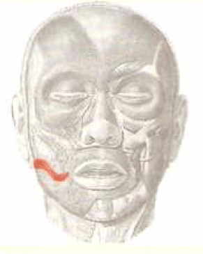
Origem: Linha oblíqua da mandíbula.
Inserção: Tegumento do lábio inferior.
Inervação: Ramos mandibular e bucal do nervo facial.
Ação: Repuxa o lábio inferior diretamente para baixo e lateralmente (expressão de ironia).
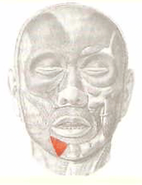
Origem: Linha oblíqua da mandíbula.
Inserção: Ângulo da boca.
Inervação: Ramos mandibular e bucal do nervo facial.
Ação: Deprime o ângulo da boca (expressão de tristeza).
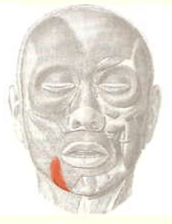
Origem: Fossa incisiva da mandíbula.
Inserção: Tegumento do mento.
Inervação: Ramos mandibular e bucal do nervo facial.
Ação: Eleva e projeta para fora o lábio superior e enruga a pele do queixo.
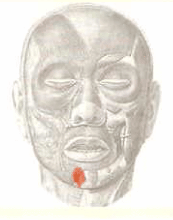
Não é encontrado em todos os corpos.
Origem: Linha mediana logo abaixo do queixo.
Inserção: Fibras do depressor do ângulo da boca.
Inervação: Ramos mandibular e bucal do nervo facial.
Ação: Auxilia na depressão o ângulo da boca.
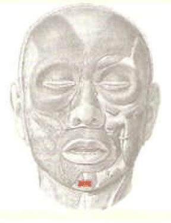
Não é encontrado em todos os corpos.
Origem: Parte marginal e parte labial.
Inserção: Rima da boca.
Inervação: Ramos bucais do nervo facial.
Ação: Fechamento direto dos lábios.
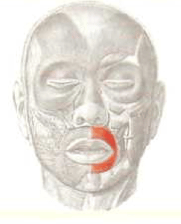
Importante músculo acessório na mastigação, mantendo o alimento sob a pressão direta dos dentes.
Origem: Superfície externa dos processos alveolares da maxila, acima da mandíbula.
Inserção: Ângulo da boca.
Inervação: Ramos bucais do nervo facial.
Ação: Deprime e comprime as bochechas contra a mandíbula e maxila. Importante para assobiar e soprar.
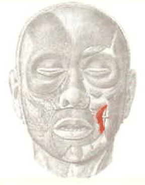
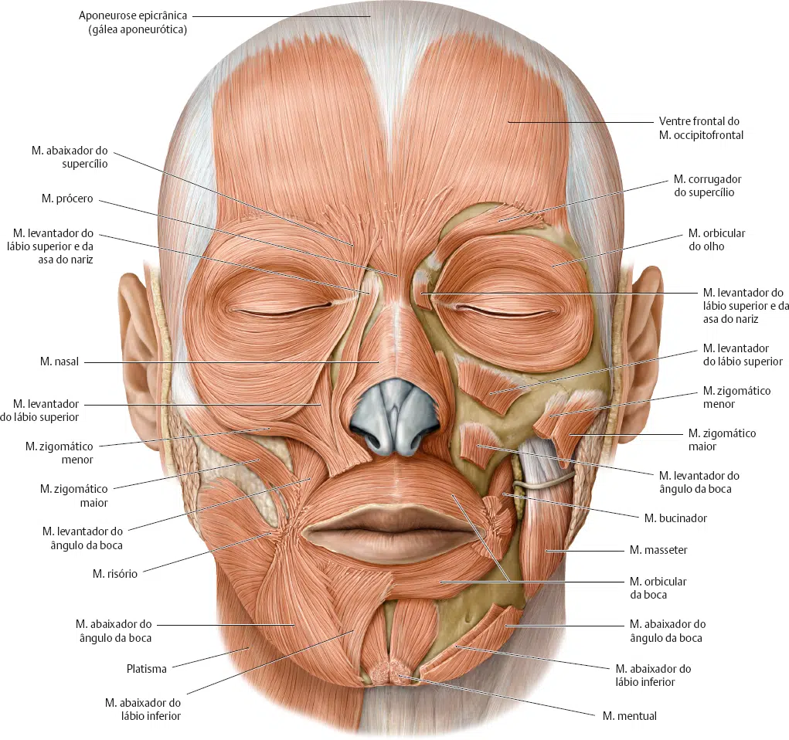